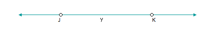
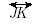

In the figure above, the line PQ passes through the points P and Q, and goes off in both directions forever, and is perfectly straight. A line, strictly speaking, has no ends.
A line is one-dimensional. It has zero width. If you draw a line with a pencil, examination with a microscope would show that the pencil mark has a measurable width. The pencil line is just a way to illustrate the idea on paper. In geometry however, a line has no width.
A straight line is the shortest distance between any two points on a plane.

Lines are commonly named in two ways:

This is read as "line JK". The two arrow heads indicate that this is a line which passes through J and K but goes on forever in both directions.If a line is not straight, we usually refer to it as a curve or arc. In plane geometry the word 'line' is usually taken to mean a straight line.
If a set of points are lined up in such a way that a line can be drawn through all of them, the points are said to be collinear. See Collinear definition.
In another branch of mathematics called coordinate geometry,
the points that define a line are located on the plane using their
coordinates - two numbers that show where the point is positioned.
For more on this, see
Definition of a line (Coordinate Geometry).